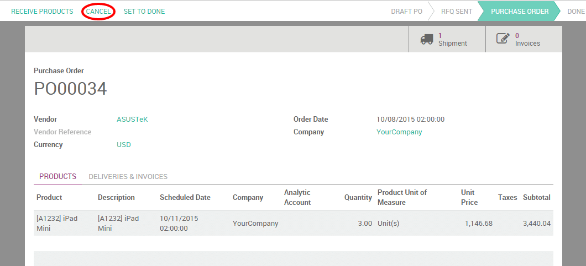
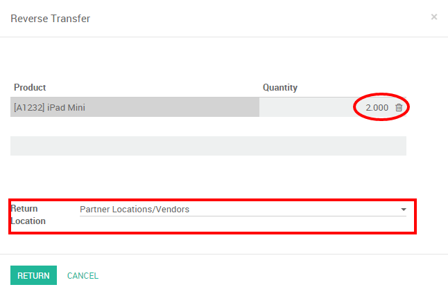

Due to misunderstandings, human errors or change of plans, it is sometimes necessary to cancel purchase orders sent to suppliers. YuanCloud allows you to do it, even if some or even all of the ordered goods already arrived in your warehouse.
We will first take as example the case where you order 3 iPad mini that haven't arrived in your transfers yet. As the installation of the inventory application is required when using the Purchase module, it is also interesting to see the case of partially delivered goods that you want to cancel.
创建采购订单
The first step to create a Purchase Order is to create a Request for Quotation (RFQ) from the menu . Confirm your RFQ to have a confirmed purchase order
注解
To learn more about the purchase order process, read the documentation page 从采购订单到开票和收货
取消你的采购订单
Use case 1 : you didn't receive your goods yet
If you confirmed your purchase order and did not received your goods yet, you can simply cancel the PO it by clicking the cancel button.
YuanCloud will automatically cancel the outstanding shipments related to this PO and the status bar will switch from Purchase order to Cancelled.

Use case 2 : partially delivered goods
In this case, 2 of the 3 iPad Mini arrived before you needed to cancel the PO.
Register good received and cancel backorder
The first thing to do will be to register the goods received and to cancel the arrival of the third iPad Mini that is still supposed to be shipped. From the PO, click on Receive products and, on the iPad Mini order line, manually change the received quantities under the Column Done.

When clicking on Validate, YuanCloud will warn you that you have processed less products than the initial demand (2 instead of 3 in our case) and will ask you the permission to create a backorder.

Click on No backorder to cancel the supply of the remaining product. You will notice than the quantity to receive has been changed accordingly and, therefore, the delivery status has switched to Done.

Create reverse transfer
Now, you need to return the iPad Minis that you have received to your vendor location. To do so, click on the Reverse button from the same document. A reverse transfer window will pop up. Enter the quantity to return and the corresponding location and click on Return.
Process the return shipment and control that the stock move is from your stock to your vendor location.

When the reverse transfer is done, the status of your purchase order will be automatically set to done, meaning that your PO has been completely cancelled.